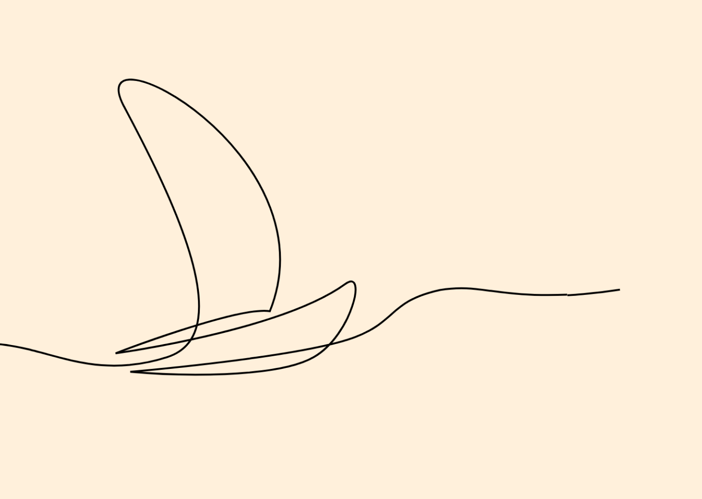

Een introductie project om te kijken hoe ver ik sta

Vak
Sprint 0
Tools
HTML, CSS, JavaScript
In deze sprint heb ik een pagina gemaakt waarin SVG-tekeningen zich lijken te tekenen terwijl je scrollt, in een doorlopend 'single line'-effect. De animatie reageert op hoe ver je de sectie in bent gescrold, en de pagina haalt content op uit een API. Het concept combineerde een hybride scroll-ervaring met die scroll-gestuurde tekeningen.
Ik ben begonnen met het ophalen van data uit de API en het opzetten van mijn leerdoelen, en heb daarna relatief lang aan het concept gewerkt. Dat hybride scrollen bleek best lastig. De kern van het project zit in de scroll-animatie: op basis van de scrollprogressie binnen de sectie bereken ik per pad de strokeDashoffset, zodat de lijnen zich precies op het juiste moment 'tekenen'. Daarbij heb ik gelet op responsiveness en een light/dark mode. Uit de code review haalde ik nog punten over consistentie in mijn JavaScript, structuur en het koppelen van root-styles.
Ik ben uiteindelijk minder ver gekomen dan ik had gewild, maar ik denk dat het goed was dat ik langer op het concept ben blijven hangen. Daardoor zat ik net iets meer buiten mijn comfortzone, wat precies aansloot op een van mijn leerdoelen. Het is iets waar ik normaal niet snel aan was begonnen omdat ik twijfelde of ik het kon, maar het lag net niet zó ver dat het onhaalbaar leek. De coole onderdelen zijn goed gelukt; met meer tijd had ik wat lege delen van de pagina nog willen aankleden met detail, waar de pagina nog flink op vooruit zou gaan.